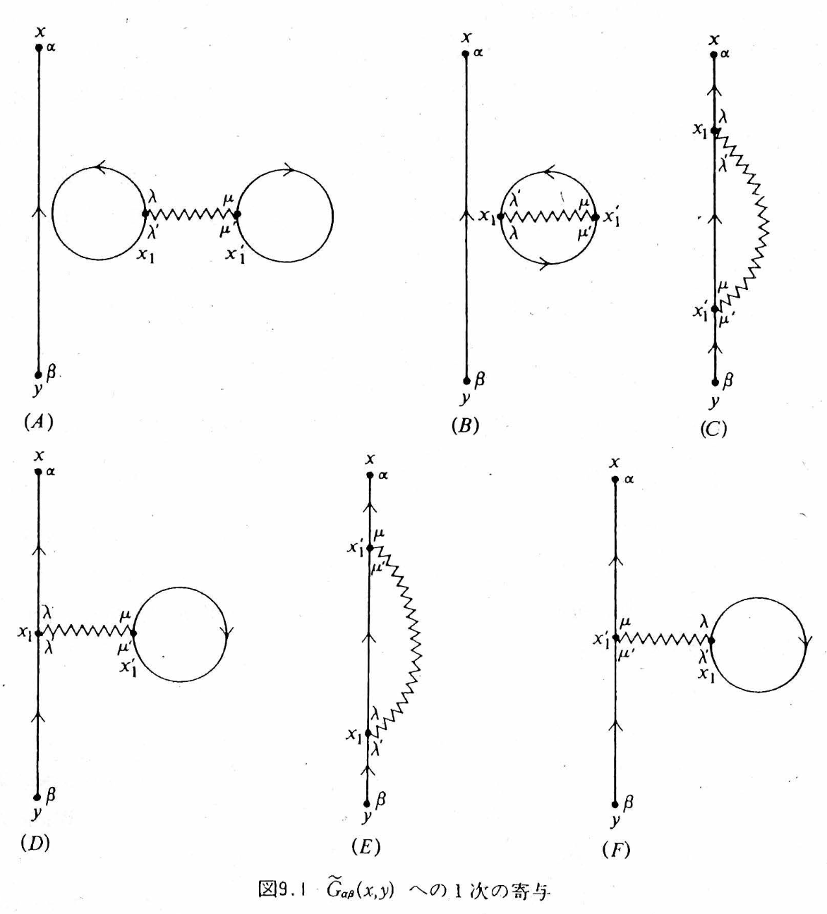
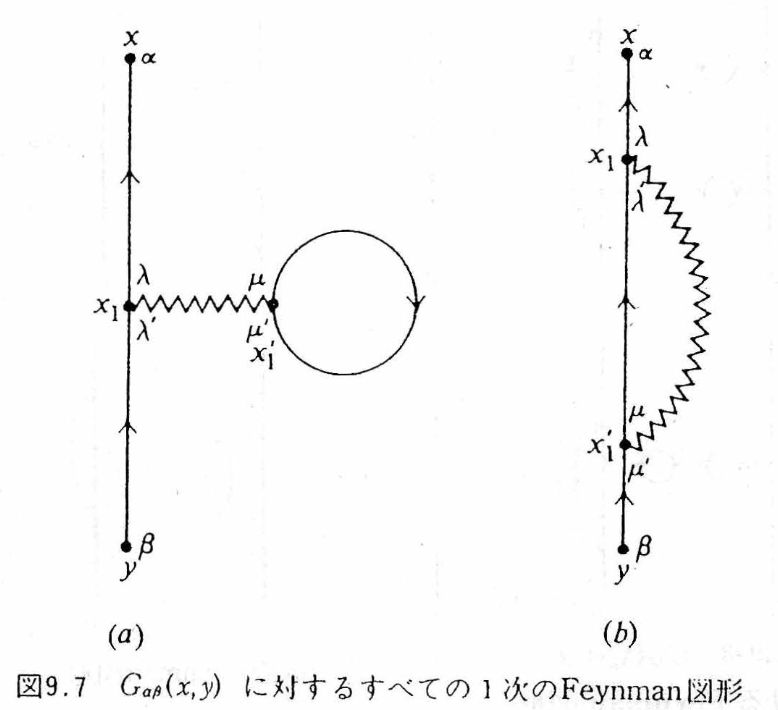
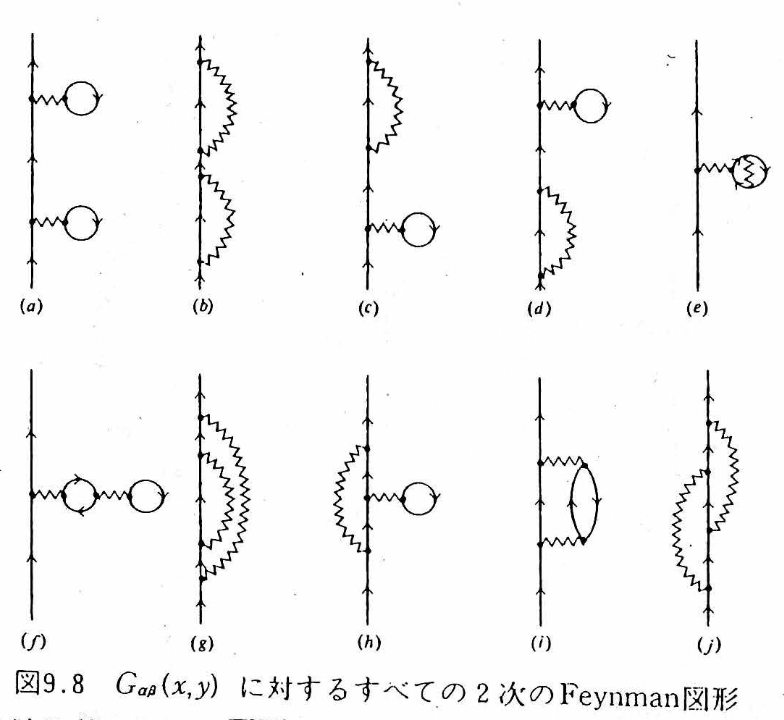
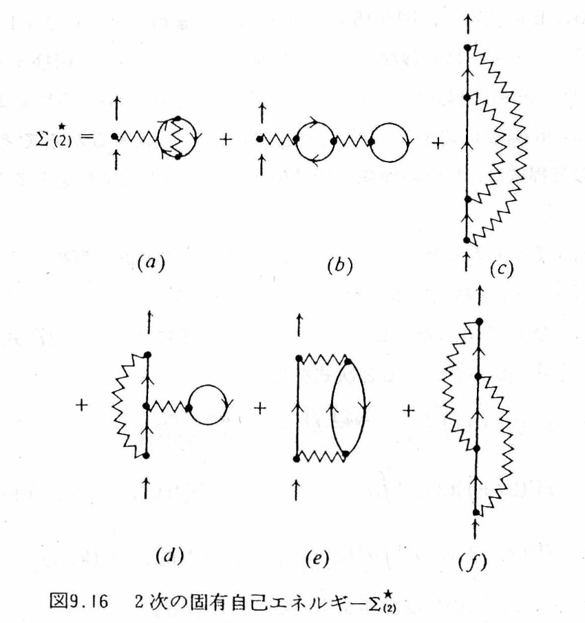

This is the theory companion to the simulator (Green’s Functions and Feynman Diagrams). Starting from the definition of the one-particle Green’s function, we read through all six first-order diagrams (Fig. 9.1) and all ten second-order diagrams (Fig. 9.8), and tell it as one continuous story that reaches the point where the polarization bubble leads to the GW approximation and crossed exchange leads to the vertex correction. In §11–13 the lead role passes to the phonon: we reread the harmonic oscillator as G0 and the cubic and quartic anharmonic terms as vertices in the same language, and check the Dyson equation against the Morse-type potential, which has an exact solution. The notation follows Fetter–Walecka, Quantum Theory of Many-Particle Systems (Japanese translation) (iG = ⟨T[ψψ†]⟩, Gaussian units, a factor of −1 for each closed loop). The equation numbers and the names of the diagrams correspond to Appendix C of the Mochizuki Research Group’s Introduction to Linear Response Theory (in Japanese).
The lead role of this explanation is a single question. “If we add one electron to a sea of non-interacting electrons (a Fermi sea) and remove it after a while, how much of it survives as ‘the same single particle’?” This survival amplitude is the one-particle Green’s function, and as the order of perturbation is raised, the answer becomes richer in the following five stages.
And there is one caution that runs through the whole page. A Feynman diagram is not a classical trajectory of an electron; it is a ledger that shows how the lines of an integral expression are connected. We picture the vertical direction of a diagram as time (up is the future), but the times of the internal vertices are all integrated over, so a single diagram represents all possible time orderings together. This caution will come back again and again later (§4, §8, §10).
Let the exact ground state of an interacting N-electron system be and let the field operators in the Heisenberg picture be , (where is a spacetime point and α, β are spin indices). The one-particle Green’s function is defined by
Unwinding the time-ordered product T shows that this single formula contains two stories. For we have
Reading from the right, it says “① create one electron at y, ② evolve in time as an (N+1)-particle system, and ③ remove one electron at x.” In other words, it is “the amplitude for the electron added at y to be detected at x.” Conversely, for (with a sign − from interchanging fermions) the story is that an electron is pulled out first, that is, the propagation amplitude of a hole. The T product is a device that combines the two stories, adding a particle and removing one, into a single analytic function — which is exactly why a single solid line in a diagram can represent both a particle and a hole.
Without interactions the answer is easy. The free Green’s function for momentum k and frequency is
The first term is above the Fermi surface (particles), and the second is below it (holes). In the time representation only the phase rotates and the amplitude never decreases — the lifetime is ∞. When interactions are switched on, the excitation ① shifts in energy (renormalization), ② loses weight as a single particle (Z < 1), ③ acquires a finite lifetime if it can decay into real final states, and ④ the lost weight moves to an incoherent background and to satellites. The yardstick that measures this is the spectral function.
Expanding Eq. (1) in the interaction picture, the nth-order term contains n interaction Hamiltonians in a row, and a total of 4n+2 field operators appear. The bare Coulomb interaction is
and both ends of a wavy line are always at the same time. Wick’s theorem breaks the ground-state expectation value of this long string of operators down into a sum of “products of pairwise contractions (= iG0).” Each way of choosing the contractions is one diagram. At first order there are three ψ and three ψ†, so there are 3! = 6 ways — these are the six diagrams of Fig. 9.1. At second order the 5! = 120 ways are reduced to 10 by grouping equivalent ones (§6). The dictionary for turning diagrams back into formulas is as follows.
| Diagram element | Factor in the formula | How to read it |
|---|---|---|
| Solid line with arrow y → x | iG0αβ(x, y) | Free propagation. For tx > ty it represents a particle, and for tx < ty a hole |
| Wavy line | U(x₁, x₁′) | Instantaneous Coulomb interaction. Both ends are at the same time (Eq. (5)) |
| Vertex (black dot) | ∫d⁴x₁ and a spin sum | All internal spacetime points are integrated over |
| Closed Fermi loop | Factor (−1) plus a spin trace | A sum over occupied states. A sign − for each loop |
| Equal-time line with the same start and end point | iG0(rt, rt⁺) = −n/(2s+1)·δαβ | The density n of the electron sea. This is what is inside a tadpole |
| Overall factor at order n | (−i/ℏ)ⁿ (−1)F | F is the number of loops (it counts the (−1) of the loop row above; it must not be multiplied in twice) |

All six have “an external line from y to x” and “one wavy line x₁–x₁′”; the only difference is how the remaining two solid lines are connected. Please read them while checking them one by one in tab ① of the simulator.
| Diagram | Shape | Representative story | Fate |
|---|---|---|---|
| (A) | Dumbbell (two densities + wavy line) | The two equal-time densities of the sea interact directly through the Coulomb interaction — the Hartree energy of the ground state | Disconnected from the external line → cancels against the denominator ⟨Φ₀|Ŝ|Φ₀⟩ and vanishes |
| (B) | Oyster (exchange loop + wavy line) | The exchange amplitude of two occupied electrons of the sea — the Fock energy of the ground state | Disconnected → cancels against the denominator and vanishes |
| (C) | Exchange: the external line passes through both ends of the wavy line in turn | The added electron exchanges with an occupied electron | Connected. Together with (E), it becomes the Fock term of Fig. 9.7(b) |
| (D) | Tadpole: a density loop is attached to the external line | The added electron feels the Coulomb field of the average density | Connected. Together with (F), it becomes the Hartree term of Fig. 9.7(a) |
| (E) | Endpoints x₁ ↔ x₁′ of (C) interchanged | Merely renaming the integration variables | Same value as (C). The factor 2 cancels the 1/2 of H₁ |
| (F) | Endpoints of (D) interchanged | Same as above | Same value as (D) |
In the end, the first-order Green’s function is reduced to two topologically distinct connected diagrams.
Here is the one-body density matrix. In the uniform electron gas (jellium), the Hartree term nV(0) exactly cancels against the potential of the uniform positive background charge. The Hartree–Fock approximation is nothing other than stopping the Feynman diagrams at first order.

| (a) Direct term = Hartree | (b) Exchange term = Fock | |
|---|---|---|
| Fact about the diagram | The external line passes through only the vertex x₁, and a closed loop is attached to x₁′ | The external line passes in turn through both ends x₁, x₁′ of the wavy line |
| Physics | The added electron feels the Coulomb field created by the average density of the sea | Exchange due to the antisymmetry of identical fermions. Since the particles cannot be given name tags, the interchanged amplitude is added with a sign − |
| Fermi loop | One (sign −) | None (sign +) |
| Nonlocality | Local in r (a multiplication operator) | A nonlocal operator connecting the two points r and r′ |
In (C) of tab ① of the simulator, the “amplitude that goes straight through” and the “amplitude that is interchanged” overlap semi-transparently, and a − tag is attached. Exchange is not an event in which two classical particles swap positions; it is an interference term of the antisymmetrized many-body amplitude.
Writing the Hartree–Fock self-energy in the time representation gives
From here a single chain of logic extends.
At second order there are two wavy lines and five solid lines, and there are ten topologically distinct connected diagrams. They fall into two groups.

| Fig. 9.8 | Name | Representative story | Classification | Fig. 9.16 |
|---|---|---|---|---|
| (a) | Hartree–Hartree | Feels the mean field, propagates, and feels it once more: G⁰ΣHG⁰ΣHG⁰ | Reducible (cutting one solid line splits it into two) | — |
| (b) | Fock–Fock | Exchange → propagation → exchange once more | Reducible | — |
| (c) | H–F mixed 1 | One Hartree and one Fock (connection order 1) | Reducible | — |
| (d) | H–F mixed 2 | Opposite connection order to (c) | Reducible | — |
| (e) | Tadpole with exchange | An electron in the density loop exchanges with another occupied electron — the Hartree field created by an exchange-corrected density | Proper, static | (a) |
| (f) | Tadpole of a tadpole | A nesting in which a density loop receives the Hartree field of another density loop | Proper, static | (b) |
| (g) | Rainbow | The internal line responsible for the Fock exchange undergoes a further exchange (unlike in (b), it is not the external line) | Proper, static | (c) |
| (h) | Exchange with a tadpole | The internal line of the exchange receives the Hartree field of the sea | Proper, static | (d) |
| (i) | Polarization-bubble insertion | The electron passes (q,ω) to the sea → a particle–hole pair (polarization cloud) is created, propagates, and recombines, and the back-action is returned | Proper, dynamic — the seed of GW | (e) |
| (j) | Crossed exchange | Emit q, emit q′, absorb q first, and absorb q′ last. Several exchange histories interfere, with signs | Proper, dynamic — the seed of the vertex correction | (f) |
(a)–(d) are merely reducible diagrams in which “a first-order block is used twice on the external line,” and they are generated automatically by iterating the Dyson equation (§9). As long as ΣH and ΣF are real and static, no matter how many of these are stacked in series, Im Σ = 0 remains — the levels and orbitals change, but the linewidth is 0. (e)–(h) are proper (they do not split when one solid line is cut), but they are again static dressings. The new physics is in (i) and (j).

Writing down Fig. 9.16(e) (= the proper part of Fig. 9.8(i)) with the Feynman rules in momentum space gives (g = 2s+1 is the spin degeneracy)
The pair G⁰(p)G⁰(p+q) is the particle–hole pair (polarization). Writing the free polarization as , the interaction part of (10) is V(q)P⁰(q)V(q) — the first term of “the bare interaction polarizes the sea, and the polarization weakens the interaction.” Now putting in the bare Coulomb V(q) = 4πe²/q², since the polarization loop is finite at q → 0 while [V(q)]² ~ q⁻⁴, this term diverges at small q. It is not that perturbation theory breaks down at second order; it is a signal to “add up diagrams of the same form (rings) to infinite order.” Summing the geometric series gives
— the screened interaction W (RPA), which is finite even at q → 0. Replacing the wavy line v of the exchange term by W, Σ = iGW is the GW approximation. It can also be described as the approximation that sums (e) of the six terms of Fig. 9.16 to infinite order and discards (f) (crossed exchange). Please check in Fig. 1 below how “it diverges when stopped at finite order and converges when summed completely.”
Fig. 1. Summing the rings: v + vP⁰v + … → W. Even if the number n of bubbles is increased, the partial sums oscillate and diverge at small q, and only the infinite sum (RPA) converges to the finite screened W. The curves are a model for teaching (v = 0.8/q², −P⁰ = 1/(1+q²/3)).
The other dynamic diagram, Fig. 9.16(f) (= Fig. 9.8(j)), is
The external line emits the wavy line q, then emits q′, and absorbs first the q it emitted first, and absorbs q′ last — this “order of connection of the lines” produces the crossing in the diagram. The crossing in the diagram does not mean that the past and the future interacted. Physically, it expresses that, because identical Fermi particles cannot be given name tags, several exchange histories cannot be distinguished and interfere as quantum amplitudes that include signs.
Once the proper self-energy Σ★ (the sum of diagrams that do not split into two when an external line is cut) has been built, the Dyson equation automatically sums the reducible diagrams to infinite order. In momentum space,
Expanding near the pole, we can read off the quasiparticle triplet.
Re Σ★ is the shift of the level, −Im Σ★ is the linewidth (the inverse of the lifetime), and Z is the remaining share of “single-particle character.” At first order (HF), Σ★ is real and static, so γ = 0 and Z = 1. When Σ★ becomes frequency dependent through (i) and (j) at second order, Im Σ★ < 0 arises in the region where there are real final states that satisfy energy conservation (the particle–hole continuum), the peak of the spectrum broadens into a Lorentzian of width 2γ, and in the time domain the survival amplitude decays as e−γt. Conversely, in a region with no final states (for example, inside a gap), the lifetime remains strictly infinite even if Σ★ depends on ω. In a Fermi liquid, the Pauli exclusion principle blocks the final states, so near the Fermi surface
— the lower the temperature and the closer to the Fermi surface, the longer-lived the quasiparticle (ξ = εk − εF). The intuition that “lowering the temperature strengthens the quantum effects of the electron–electron interaction and makes the scattering fiercer” is the wrong way around. Please check this in Fig. 2.
Fig. 2. Spectral function A(k,ω) and lifetime. Switch the level of approximation and move ξ and T. Up to first order the peak only moves, and its width is 0. A width appears for the first time at second order; please check that it narrows as ξ → 0 and T → 0 (Eq. (15)). The model is a teaching model that has the form of Eq. (15), and λ is the interaction strength (γ is given directly as the half width at half maximum, and the Z factor of Eq. (14) has already been absorbed into γ).
| A reading that is easy to stumble on | The correct reading | § |
|---|---|---|
| A diagram is a photograph of the trajectory the electron followed | A ledger showing “how the lines are connected” in an integral expression. All internal times and coordinates are integrated over | 0, 2 |
| The wavy line is a “Coulomb ray” flying at finite speed, and a slanted wavy line connects the past and the future | Both ends of a wavy line are always at the same time (U ∝ δ(t₁−t₁′)). The slant is just a matter of how the diagram is drawn | 2, 4 |
| Hartree “happens at one particular time,” while Fock “spans times” | The only difference is direct or exchange (how the lines are connected) | 4 |
| δ(t−t′) is “an event that happens only once” | It means “has no memory (time-local).” t runs over all times | 5 |
| If HF is stacked up to high order, a lifetime will eventually appear | However many times a real, static Σ is stacked, Im Σ = 0. The lifetime comes from the dynamic correlation of (i) and (j) | 5, 6, 9 |
| The time kernel is a Gaussian distribution, and its width is “the uncertainty of the self-energy” | A complex-valued memory kernel. Width alone gives no lifetime; real final states are required | 5, 9 |
| −Im G is the density of states as it stands. Resolving it in k gives a band diagram | A(k,ω) = −(1/π)Im GR (retarded type) → D(ω) from the trace and Σk | 1 |
| The lower the temperature, the fiercer the scattering between electrons and the “stickier” things get | By the Pauli exclusion principle, −Im Σ ∝ ξ²+(πkBT)². At low temperature and near the Fermi surface the lifetime is long | 9 |
| A short one-particle lifetime = a large electrical resistance | Resistance is the relaxation of the current (momentum). A separate transport calculation that includes Umklapp processes, impurities, and vertex corrections is needed | 9 |
| (a)–(d) at second order are also new second-order self-energies | Reducible diagrams = iteration of first-order blocks. The Dyson equation generates them automatically | 6, 9 |
| The “core of the correlation” is (e) and (f) of Fig. 9.8 | (e) and (f) of Fig. 9.16 = (i) and (j) of Fig. 9.8. Beware of mixing up the labels | 6 |
From here on we change the lead role from the electron to the phonon (corresponding to tab ④ of the simulator). What corresponds to the electron’s “sea of non-interacting particles” is the harmonic oscillator, and what corresponds to the electron’s Coulomb interaction is the cubic and quartic terms of the atomic displacement. The notation follows Tadano and Tsuneyuki, PRB 92, 054301 (2015) [the SCP paper of ALAMODE]. Expanding the interatomic potential in the displacement u and writing the displacement in terms of the normal coordinate Aq = bq + b†−q, we have
Φ(q1,…,qn) is the nth-order force constant transformed to normal coordinates (divided by the masses), and Δ expresses momentum conservation. The one-phonon Green’s function is the imaginary-time correlation function obtained by replacing ψ, ψ† of the electron case with Aq:
Compared with the electron’s G0 = 1/(ω − ωk), the phonon has poles at both positive and negative frequencies (because A = b + b† contains both creation and annihilation). Written in one line, the calculation in the harmonic-oscillator notes (“the response function in imaginary time” in lecture notes 2/14) is as follows: take ⟨A(τ)A(0)⟩ = (n+1)e−ωqτ + n eωqτ and apply the transform ∫0βħdτ eiωmτ; the temperature then disappears through the two identities (n+1)(1−e−βħω) = 1 and n(eβħω−1) = 1, and (17) results. Why imaginary time (Q1 of the lecture notes)? Because it lets us combine the finite-temperature expectation value Tr[e−βH…] and the time evolution e−iHt/ħ into a single exponential, so that Wick’s theorem and Feynman diagrams can be used as they are; for the retarded function at real frequency, we return at the end by the analytic continuation iωm → ω + iε. The Dyson equation has the same form as for electrons, and for matrices (including the mixing of bands j, j′) it reads
For a single mode, Ω2 = ωq2 − 2ωqΣq(Ω), that is, Ω ≈ ωq − Σq (in this sign convention, Σ < 0 means hardening). In what follows, for ease of reading, we speak in terms of the “frequency shift” Δ ≡ Ω − ωq and the “linewidth” Γ ≡ the Im part (Γ is the half width at half maximum, and the lifetime is τ = 1/(2Γ)).
Just as the six first-order diagrams for electrons were gathered into Hartree and Fock, for phonons three proper diagrams remain up to second order in the coupling constants (the column of diagrams in tab ④ of the simulator. The wavy lines are the phonon lines G0, and ● is the vertex of Φ3 (three legs) or Φ4 (four legs)).
| Diagram | Order | Content | ω dependence | Linewidth | Electron counterpart |
|---|---|---|---|---|---|
| Loop | First order in Φ4 | A mean field obtained by closing two of the four legs, giving ⟨A²⟩ = 2n+1. SCP adds this up self-consistently | None (real, static) | 0 | Hartree–Fock (Fig. 9.1) |
| Tadpole | Second order in Φ3 | One of the three legs goes through a line with q = 0 and ω = 0 to the loop of another three-leg vertex. A change of curvature due to a static displacement ⟨u⟩ (thermal expansion, relaxation of internal coordinates) | None | 0 | The “density shift” of Hartree |
| Bubble | Second order in Φ3 | The external phonon breaks into two phonons and returns. If there is a final state with ω = ω1+ω2, there is an imaginary part | Yes | Yes | Polarization bubble (i) (Fig. 9.8) |
| Second order in Φ4 (three lines) | Second order in Φ4 | Three-phonon intermediate state. Omitted in Tadano 2015 | Yes | Yes | — |
Letting iωm → ω + iε, the imaginary part separates out of 1/(ω − ω1 − ω2 + iε) = P[…] − iπδ(ω − ω1 − ω2), and this is Tadano’s Eq. (30) — the linewidth copied into lecture notes 2/16:
The first term is the decay “one → two” (the Klemens process), and the second is merging with a thermally excited phonon; both are nonzero only when there is a final state that satisfies conservation of energy and momentum. At high temperature n ∝ kBT/ħω, so Γ ∝ T and the lifetime τ = 1/(2Γ) ∝ 1/T. The real part (frequency shift) is obtained by replacing the δ of the same expression with a principal value such as P[1/(ω − Ω′ − Ω″)], and if the frequency of the external line lies below the two-phonon continuum, it softens by level repulsion. The tadpole is not contained in Tadano’s paper (the end of Section IV B of the paper states explicitly that “thermal expansion, relaxation of internal coordinates, and the intrinsic shift due to the bubble are not considered”), but it is exactly the effect of the cubic term displacing the equilibrium position, so it cannot be left out when considering negative thermal expansion. Written for a single mode,
Reduce the crystal formulas to a single oscillator (N = 1, one mode) and write H = ħω0(b†b+½) + gA³ + hA⁴, g = αλ3/2, h = βλ², λ = ħ/2Mω0. The on-shell (ω = ω0) values of the three diagrams are all proportional to ⟨A²⟩ ∝ 2n+1:
For a single mode the imaginary part of the bubble vanishes because δ(ω0 − 2ω0) = 0 — a single anharmonic oscillator has no lifetime (its eigenstates are strictly stationary). Whether these are correct can be checked with Rayleigh–Schrödinger perturbation theory. The first order in the quartic term and the second order in the cubic term (the problem in Landau–Lifshitz, Quantum Mechanics, §38) give
At T = 0, 12h − 60g²/ħω0 = ħ(ΔL + ΔT + ΔB)|n=0 (12 − 36 − 24 = −60), in agreement with Eq. (23). At finite temperature, the absorption intensity for n → n+1 is (n+1)pn, so the weighted average of the transition frequency is, using ⟨(n+1)²⟩/⟨n+1⟩ = 2nB+1 (⟨n²⟩ = 2nB²+nB in Bose statistics), ħω0 + (2nB+1)[12h − 60g²/ħω0]. This is the same as the quasiparticle frequency ω0 + ΔL + ΔT + ΔB of the Dyson equation. In other words, the peak of the lowest-order Dyson equation gives the centroid of the exact spectrum (a comb of transitions lined up for each n).
The Morse-type potential (lecture notes 11/7) has expansion coefficients that are fixed by a single parameter, and its Schrödinger equation can be solved exactly:
Putting α = −ξ and β = (7/6)ξ²/Mω0² into Eq. (23) and rearranging with λ = ħ/2Mω0 and D gives 12h = (7/16)(ħω0)²/D, 36g²/ħω0 = (9/16)(ħω0)²/D, and 24g²/ħω0 = (6/16)(ħω0)²/D, so that
Fig. 3. Spectrum A(ω) of the Morse type: the comb of the exact solution and the peak of the Dyson equation. Each line of the comb is an n → n+1 transition (intensity (n+1)pn), and the band is the mean ± standard deviation. The vertical lines are loop only (lowest order of SCP) and the sum of the three diagrams (Dyson). Units are ħ = ω0 = 1.
Fig. 4. Renormalized frequency Ω(T) and linewidth Γ(T). Left: loop only (hardening), the sum of three diagrams (Dyson, red dashed line), the mean ± σ of the exact-solution comb (green), and the lecture-notes substitution n → nB (gray). Right: Γ ∝ (2n+1) when a two-phonon continuum exists in the crystal, and the difference between taking the argument of the Bose factor as ω0/2 (energy conservation) or ω0 (the formula in the lecture notes).
At the end of lecture notes 11/7, an internal energy is constructed by substituting the Bose–Einstein nB into the Morse levels: UM = (nB+½)ħω0 − (nB+½)²(ħω0)²/4D. The exact thermal average is ⟨(n+½)²⟩ = (nB+½)² + nB(nB+1) (the fluctuation of Bose statistics), so the substitution drops the fluctuation term nB(nB+1)(ħω0)²/4D (∝ T² at high temperature). For the same reason, the transition frequency with n → nB substituted, ω0 − (ħω0²/2D)(nB+1), softens less than the Dyson result with (2nB+1) (at high temperature it is half as large, and at low temperature the two agree), and this is the gray dashed line in Fig. 4. What the mean field (loop, SCP) picks up is the “second moment including fluctuations” ⟨A²⟩ = 2n+1, and this is the reason it becomes (2nB+1) rather than (nB+1). The Γ ∝ (2n+1) and τ ∝ tanh(ħΩ/2kBT) of lecture notes 2/16 become τ ∝ tanh(ħΩ/4kBT) when written in terms of the occupation numbers of the two daughter phonons (Ω/2 each) that satisfy the δ function (the Balkanski–Wallis–Haro formula Γ = Γ0[1 + 2/(eħω/2kBT − 1)] for the Raman linewidth of Si has this form).
Companion simulator: Green’s Functions and Feynman Diagrams — Adding an Electron to the Electron Sea and Removing It Again (④ Phonons: anharmonic-term diagrams and the Morse type).
Related resource: the harmonic oscillator (an entrance to second quantization).
The diagrams are quoted from Figs. 9.1, 9.7, 9.8, and 9.16 of Fetter–Walecka (Japanese translation); in Appendix C of the Mochizuki Research Group’s Introduction to Linear Response Theory (in Japanese), the same figures are called Fig. C.2, Fig. C.7, Fig. C.11, and Fig. C.12, respectively.
Figs. 1 and 2 are teaching models for seeing the shapes and are not calculations for any particular material.
Main sources